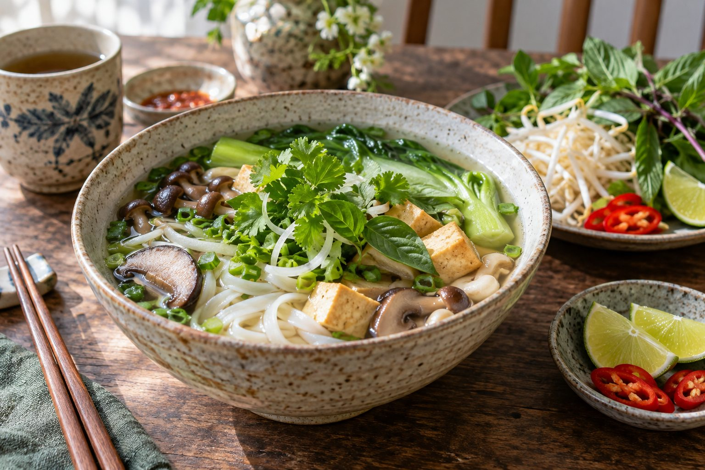

Nước dùng
Phần nền nóng, trong và thơm dịu giúp kết nối mọi nguyên liệu trong tô.
Từ những điều quen thuộc
Một tô phở hài hòa bắt đầu từ nguyên liệu tươi, cách chuẩn bị cẩn thận và sự cân bằng giữa thơm, ngọt, mềm và tươi mát.
Bốn nhóm chính
Từ phần nền đến phần ăn kèm, các nguyên liệu nâng đỡ nhau để tạo nên trải nghiệm trọn vẹn.
Phần nền nóng, trong và thơm dịu giúp kết nối mọi nguyên liệu trong tô.
Sợi bánh mềm, mỏng vừa phải và không bị nát khi chan nước dùng nóng.
Thịt bò, thịt gà, nấm hoặc đậu hũ tạo điểm nhấn và độ no cho món ăn.
Hành, rau thơm, chanh và ớt bổ sung màu sắc cùng hương vị theo sở thích.
Chọn và chuẩn bị
Nguyên liệu nên được rửa sạch, để ráo và chuẩn bị gần thời điểm dùng. Rau thơm giữ được màu tươi; bánh phở không để quá lâu sau khi trụng.
Gia vị nên được thêm từng chút. Sự vừa đủ giúp người ăn vẫn cảm nhận được vị riêng của nước dùng và nguyên liệu chính.
Xem công thức gợi ý
Lưu ý trong gian bếp
Tách riêng nguyên liệu sống và chín, dùng dụng cụ sạch, nấu chín thực phẩm và bảo quản đúng nhiệt độ. Nội dung trên website mang tính tham khảo cho bài tập học tập.